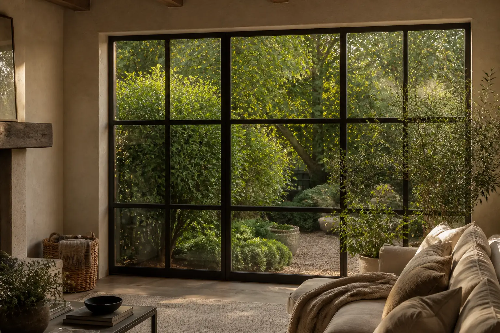
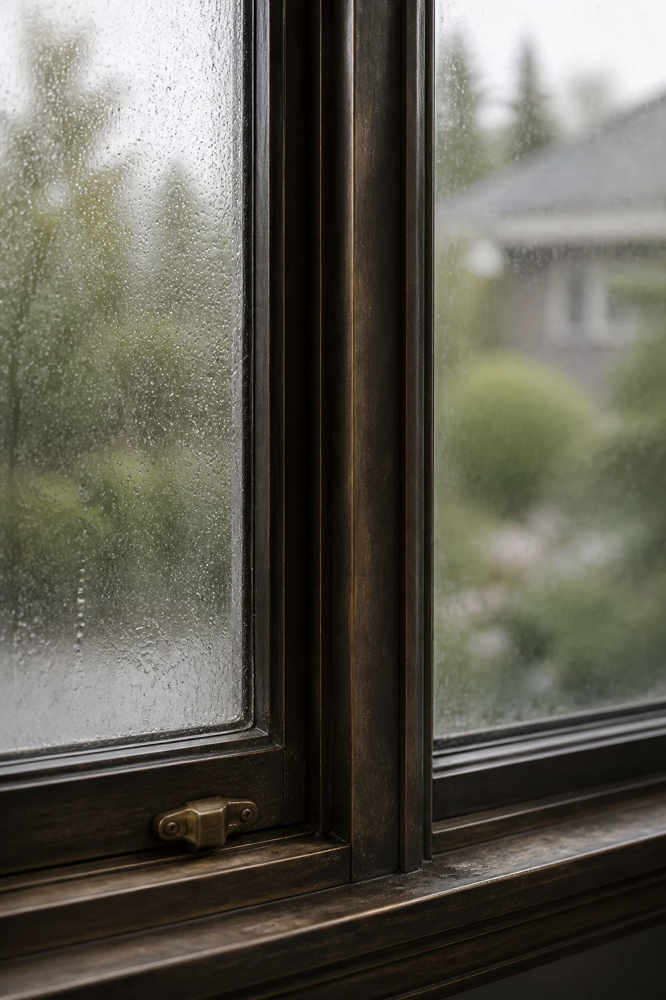
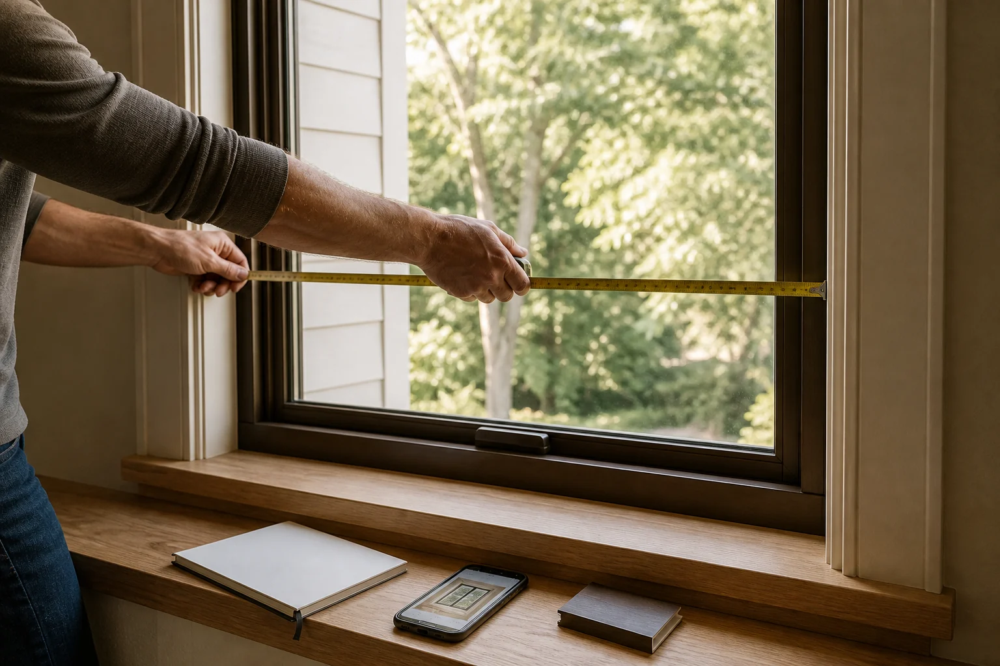

Installation & Replacement
New openings and full replacements: consider frame materials, glazing choices, surrounding trim and the condition of each existing window.
Explore installation and replacement
Describe the window, frame, glass or seal concern. Window Match may introduce your request to independent local providers serving your area.
Tell us about your windowsDifferent projects begin with different questions. Start with the service that most closely describes what you see now.
New openings and full replacements: consider frame materials, glazing choices, surrounding trim and the condition of each existing window.
Explore installation and replacementSticking sashes, worn balances, loose locks, damaged tracks and localized frame concerns may sometimes be assessed without full replacement.
Explore window repair
Cracked panes, trapped moisture, recurring condensation and deteriorated perimeter seals can call for different glazing or insulated-glass assessments.
Explore glass and seal repairShare the project once and keep the early conversation focused on the details that matter.
A full-window photograph and one close detail can make the first conversation more specific.
Tell us what you notice, where the windows are located and what outcome you are considering.
Window Match organizes the information and looks for relevant independent providers in your area.
Interested providers may follow up to discuss options, inspections and estimates. Matching and response are not guaranteed.
Small changes in comfort, clarity or operation can help define the right type of conversation. These signs do not diagnose the cause, but they are useful details to include in a request.

Cold or warm air felt near a fully closed window.
Moisture or haze appears between panes and does not wipe away.
A sash sticks, will not stay open or no longer locks smoothly.
Cracks, rot, swelling or separation are visible around the opening.
Stains, dampness or peeling finishes appear near the window.
Higher bills may be one reason to explore window performance, though many factors affect energy consumption.
Note when the issue appears, whether it is recurring and how many openings are affected.
Find the closest serviceKnowing the general style of an opening can make the first conversation more specific. If you are unsure, one clear full-window photograph is enough to begin.
Look at how the sash moves, where the meeting rails sit and whether the opening projects beyond the wall.

Two sashes move vertically. Mention sticking, balance problems, lock alignment or air around the meeting rail.

A side-hinged sash opens with a handle or crank. Note binding, damaged hardware or difficulty closing tightly.

One or more sashes travel horizontally. Track condition, rollers, locks and drainage details can all matter.

A fixed pane does not open. Questions usually focus on glass clarity, edge seals, frame condition and performance.

Several joined units project beyond the wall. Include the full assembly, surrounding trim and any signs of movement or moisture.

Arches, circles and custom forms may require exact templates or tailored glazing. A straight-on photograph is especially useful.
Not sure what style you have? Show the complete opening, nearby trim and one close detail.
Describe your openingWindow Match is an independent aggregator, not a contractor. We help place the basic project context in front of local providers so homeowners can begin comparing possible approaches.
Always confirm a provider’s licensing, insurance, references, written scope and warranty terms before authorizing work.
Gather opening count, room location, photographs, visible concerns and preferred timing before the first conversation.
Independent local businesses may review your request. Coverage, provider participation and response vary.
Ask about inspection, written scope, materials, total cost, scheduling and warranty terms before deciding.
Appointments, quotes, matching, provider response and service availability are never promised.
You do not need every answer before starting. A few practical details can help a provider understand the likely scope and prepare better questions.

“I had a short list of priorities but did not know whether the project called for repair or replacement. Putting the window count, photos and comfort concerns in one request helped me have more focused conversations with local providers.”
Example homeowner experience
Every project and provider response is different. This example illustrates how organizing the initial details may simplify comparison; it is not a promise of outcome.
A few clear answers can help you prepare a useful request and understand what happens after it is submitted.
Window Match helps organize basic project information and may share a request with relevant independent window service providers in your area.
No. Window Match is an independent aggregator, not a contractor. Any inspection, estimate, agreement or work is handled directly by an independent provider.
You can describe installation and replacement projects, operational repairs, frame or hardware concerns, and glass or seal issues. Choose “Not sure” if the right service is unclear.
No. An approximate window count, the room or elevation, clear photographs and a description of the concern are enough to start. Only measure when the opening is safely accessible.
Include what you see or feel, how many openings are affected, whether the issue is recurring, the property type, preferred timing and any useful photographs.
No. Provider participation, coverage, availability and response vary by project and location. Submitting a request does not guarantee a match, appointment or estimate.
Ask each provider about licensing, insurance, references, written scope, materials, total cost, scheduling and warranty terms before authorizing work.
Your request is used to review and route the project and may be shared with independent providers that could respond. See the Privacy Policy for full details.
Clear details help providers understand the opening before the first conversation.
How request information is usedTell us what is happening and what you would like to explore. Your request may be shared with independent local providers that handle relevant window projects.
Window Match does not perform contracting work. Provider response and availability are not guaranteed.